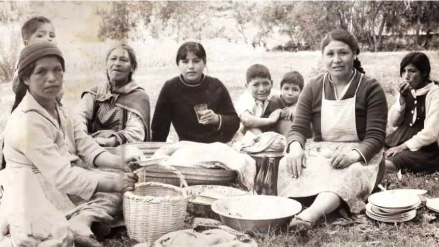
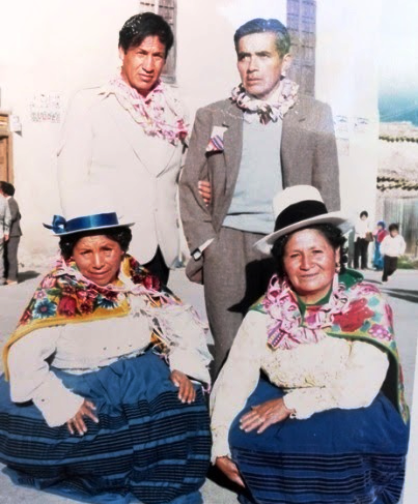

Una mujer muy pequeña en estatura, pero grande en corazón, así era “Mami Silvina” siempre preocupada por sus hijos y familiares. Luchando (simbólicamente) contra todo y en sus últimos años hasta con el cáncer.
Vivió su infancia en su natal Goillaresguisca. De pequeña emigro al que sería nuestro “lugar de origen” Muquiyauyo. Tiempos más tarde viajaría a Lima con unos “americanos”, familia que significaría un importante hito en su formación. En ellos tuvo a su “primera familia”, aprendió los cánones de una sociedad “moderna”, la lectura, el respeto, la tolerancia y al amor por la tierra. Tanto sería el cariño y apego con ellos y ellos con mama silvina que en la época que “echaban” a los extranjeros del Perú les toco abandonar nuestra tierra y regresar a los “Unaited”, le propusieron irse con ella, cosa que habría cambiado el destino de la familia Miguel Casas. Dos cosas lo detenían: el temor a lo lejano y desconocido y segundo (creo) el más importante, ya tenía el corazón flechado por cupido (papi tico). No era para menos, mi viejo tenía un “feeleng” típico de aquellos años, alto, buen mozo, a lo Gardel.

No se fue al extranjero, cosa que más tarde lo recordaría con nostalgia por las cosas que iba a experimentar en su futuro. Por ejemplo, tener que viajar por primera vez en el mar, en un bote a la isla del frontón para ver a papi tico, preso político junto a LAS y otros “compañeros” que por su posición ideológica pasaban condena “blanca”, con todas las comodidades de biblioteca, alimentación y visitas que ellos lo solicitaran. Me conto que una vez que llegaron al penal veían a la distancia unos puntitos que poco a poco tomaban forma y entre ellos los familiares iban reconociendo a sus seres queridos, unos más altos, flacos, barbudos, cambios propios del encierro y rutina.
Conforme pasaba el tiempo la familia creció hasta llegar a formar cuatro hijos y una hija. Mientras pasaban los años, ella desarrollaba el rol de papa y mamá ya que papi tico estaba lejos trabajando en el asiento minero de la Oroya. Mientras tanto una de las actividades que “tenía” que cumplir era el de las “faenas comunitarias” como socia de la comunidad agrícola de Muquiyauyo. Considerando lo rudo de la labor aun así no se hacía problemas a la hora de “entrar” a los canales de regadío para “limpiar”, decía “porque no puedo hacer el trabajo de un hombre, es menos doloroso que parir hijos, tengo hijos menores y debo ver que no les falten el respeto ni la comida”. Los comuneros siempre la respetaron por su carácter, sinceridad y honestidad.
Una vez que migraron mis hermanos, nos quedamos literalmente solos. Desde entonces la vi pasar penas y alegrías por la situación en que vivíamos. No era el mejor de los tiempos en el campo, no faltaban las indiferencias por la falta de papa en casa, aun así, supo llevar adelante su vida y de sus hijos. Los dos bálsamos de su vida eran: Los Carnavales y el Tío Juan. Los carnavales, porque era la única oportunidad en el año que podía “bailar” en la Sociedad de San Juan y olvidarse de todas las penas y amarguras de la vida y el tío Juan porque era su único hermano con quien se enojaba y amistaba tantas veces tenían oportunidad. Recuerdo que cada vez que cocinaba algo rico su primer deseó era “ojalá viniera tu tío Juan para que coma aunque sea un poquito, en su casa que va a comer…” y como adivinando el tío estaba tocando la puerta. Me decía -Atiende a tu tío, yo no me enojo con todo perro y gato, él es tu tío y tienes que respetarlo.

Tenía un gran valor para afrontar las cosas. Recuerdo una vez me contaron que en plena época del terrorismo, ella, sola en Muquiyauyo había sorprendido a un “ladrón” en casa, lo había maniatado y lo paseó desnudo por el pueblo como escarmiento. Por muchos años vivió literalmente sola, y ya en ese entonces se había presentado el “mal” que lo llevaría a la muerte. Por lo demás estaba tan acostumbrada a su entorno y le resultaba casi imposible “salir” del pueblo, siempre decía que no estaba sola, tenía su burrito, su vaca, gallinas y cuyes, y eso lo mantenía “atada”. Cada vez que salía a Lima o Chiclayo no veía las horas de regresar por sus “animalitos”.
Ahora recuerdo con nostalgia cada momento vivido y no corregiría nada de lo vivido a su lado, solo quizás la vez que “salí” sin su permiso unas vacaciones a la selva central, me fue tan mal que prefiero no describirlo. Más bien doy gracias a Dios por haber tenido una madre como ella, me inculco todos los valores que me sirven ahora que tengo mis hijos. No me canso de mencionarla cada vez que hay que ponerla de ejemplo hasta puedo verla reflejado en mi hija, con una dedicación al servicio, cariñosa y preocupada por su hermano. Si de trascendencia se trata la mami silvina dejo un legado para sus hijos, su yerno y las amistades y familiares quienes la recuerdan con mucho cariño como una mujer dado al servicio al prójimo. Donde estés mami estoy seguro que está muy tranquila viendo lo realizado que estamos.
Mami Silvina, te recordamos en nuestras oraciones y estamos seguros que estas cerca a Dios desde donde intercedes por nosotros, lo podemos ver en las bendiciones recibidas QEPDDG.